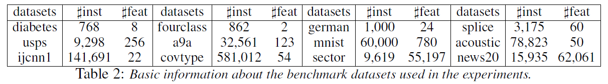
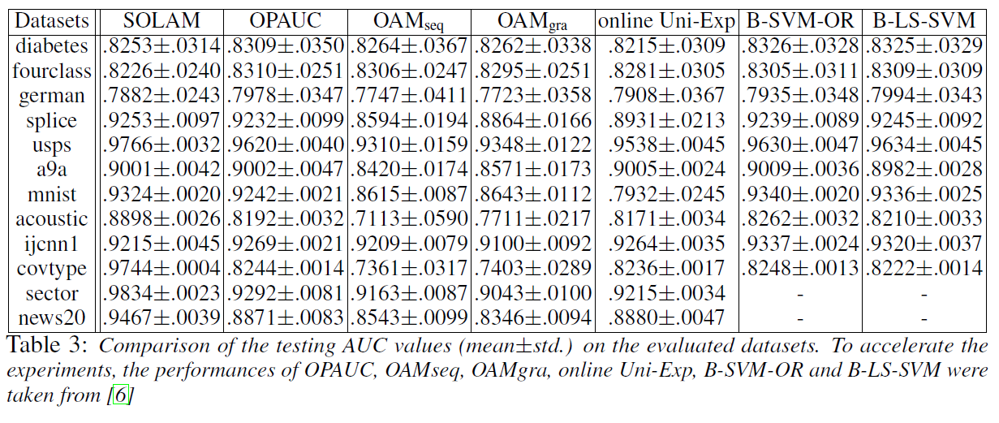
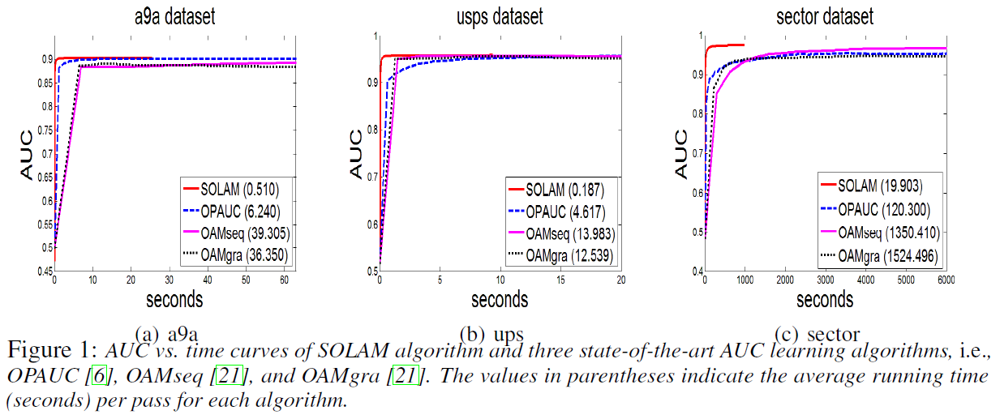

Ying et al., 2016, Stochastic online AUC maximization, NIPS. pdf
Introduction
Topic: online learning algorithms that maximized AUC for large-scale data
Challenge: learning objective is usually defined over a pair of training examples of opposite classes
Proposed method
AUC optimization can be equivalently formulated as a convex-concave saddle point problem (SPP)
From this SPP representation, a stochastic online algorithm (SOLAM) is proposed which has time and space complexity of one datum
Background
Input space \(\mathcal{X} \subseteq \mathbb{R}^d\)
Output space \(\mathcal{Y} = \{ -1, 1\}\)
Training data \(\mathbf{z} = \{ (x_i, y_i) \}_{i = 1}^n\): i.i.d. sample from unknown distribution \(\rho\) on \(\mathcal{Z} = \mathcal{X} \times \mathcal{Y}\)
Scoring function \(f: \mathcal{X} \to \mathbb{R}\)
AUC: the probability of a positive sample ranks higher than a negative sample
Squared loss has been shown to be statistically consistent with AUC (Gao and Zhou, 2015)
In this work, squared loss and linear classifier are used
Let \(p = \Pr (y=1)\)
For any random variable \(\xi (z)\), conditional expectation is defined by \(\mathbb{E} [\xi(z) | y=1] = \frac{1}{p} \int \int \xi(z) \mathbb{I}(y = 1) d\rho(z)\)
Theorem 2. Assume that samples \(\{ (x_1, y_1), \cdots, (x_T, y_T) \}\) are i.i.d. drawn from a distribution \(\rho\) over \(\mathcal{X} \times \mathcal{Y}\), let \(\Omega_1\), \(\Omega_2\) be given by the former section and the step size given by \(\{ \gamma_t > 0 : t \in \mathbb{N} \}\). For sequence \(\{ (\bar{v}_t, \bar{\alpha}_t) : t \in [1,T] \}\) generated by SOLAM, and any \(0 < \delta <1\), with probability \(1 - \delta\), the following holds where \(C_{\kappa}\) is an absolute constant independent of \(R\) and \(T\)
Corollary 1. Under the same assumptions as in Theorem 2., and \(\{ \gamma_j = \zeta j^{-\frac{1}{2}} : j \in \mathbb{N} \}\) with constant \(\zeta > 0\), with probability \(1 - \delta\) it holds the following
5-fold cross validation to determine \(\zeta \in [1:9:100]\), and \(R \in 10^{[-1:1:5]}\) by grid search
Averaging results from 5 runs of 5-fold cross validation
Multi-class dataset is transformed into binary classification by randomly partitioning the data into two groups, where each group includes the same number of classes
Comparison
OPAUC (Gao et al., 2013)
OAM (Zhao et al., 2011)
online Uni-Exp: weighted univariate exponential loss (Kotlowski et al., 2011)
B-SVM-OR: batch learning algorithm using the hinge loss surrogate of AUC (Joachims, 2006)
B-LS-SVM: batch learning algorithm using \(l_2\) loss surrogate of AUC



Further Study
Joachims, 2005, A support vector method for multivariate performance measures, International Conference on Machine Learning. pdf
Kotlowski et al., 2011, Bipartite ranking through minimization of univariate loss, International Conference on Machine Learning. pdf
Rakhlin et al., 2012, Making gradient descent optimal for strongly convex
stochastic optimization, International Conference on Machine Learning. pdf
Ying and Zhou, 2016, Online pairwise learning algorithms, Neural Computation. pdf
References
Gao et al., 2013, One-pass AUC optimization, International Conference on Machine Learning. pdf, summary
Joachims, 2006, Training linear svms in linear time, International Conference on Knowledge Discovery and Data Mining. pdf
Kotlowski et al., 2011, Bipartite ranking through minimization of univariate loss, International Conference on Machine Learning. pdf
Zhao et al., 2011, Online AUC maximization, International Conference on Machine Learning. pdf, summary